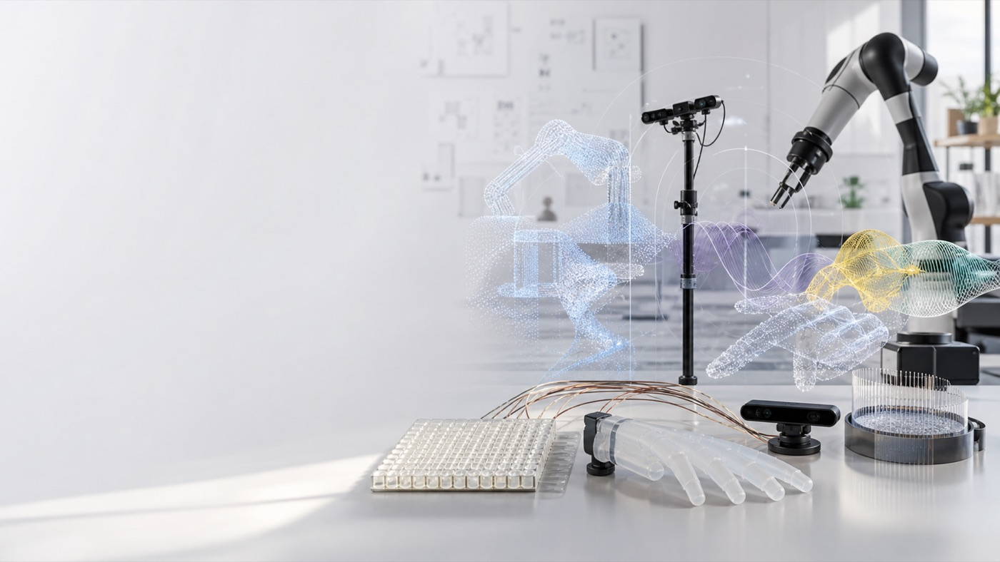

Interactive multisensory systems
Designing haptic, visual, audio, and embodied feedback systems for virtual, augmented, and physical interaction.
Touch / vision / actionMechanical Engineering / Human-centered robotics
MultisensOry Systems for Adaptive and Interactive Cognition. We design, model, and study robotic systems that help people sense, act, learn, and interact in richer ways.

MOSAIC works across device design, multimodal modeling, human user studies, and experimental analysis. The home page is intentionally a compact research overview, with deeper project pages easy to add later.
Designing haptic, visual, audio, and embodied feedback systems for virtual, augmented, and physical interaction.
Touch / vision / actionBuilding computational and statistical models of how people integrate cues, adapt to mismatch, and make decisions while interacting.
Multimodal modelingRunning controlled user studies and experiments to evaluate robotic interfaces, perception, learning, and performance.
Design / experimentsDraft project tiles that can later become individual project pages with videos, datasets, code, press links, and student ownership.
Wearable and grounded feedback systems for studying how people interpret touch when visual and physical cues do not perfectly align.
Robotic systems that respond to user behavior, context, and task goals while supporting creative, expressive, and functional interaction.
Short updates keep the home page active without turning it into a maintenance burden.